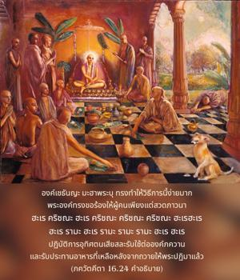
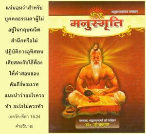
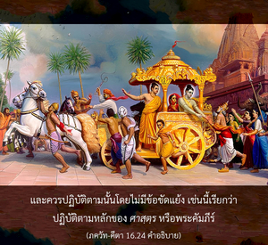

ดังนั้นเขาควรเข้าใจว่า อะไรคือหน้าที่ และอะไรไม่ใช่หน้าที่ด้วยกฎแห่งพระคัมภีร์ เมื่อรู้กฎเกณฑ์เหล่านี้แล้ว เขาควรปฏิบัติเพื่อตนเองอาจค่อยๆพัฒนาขึ้น



ดังที่ได้กล่าวไว้ในบทที่สิบห้า กฎเกณฑ์ทั้งหมดของพระเวทหมายไว้เพื่อให้รู้องค์กฺฤษฺณ หากเข้าใจองค์กฺฤษฺณจาก ภควัท-คีตา และมาสถิตในกฺฤษฺณจิตสำนึก ปฏิบัติในการอุทิศตนเสียสละรับใช้ เราจะบรรลุถึงความสมบูรณ์สูงสุดแห่งความรู้ที่วรรณกรรมพระเวทเสนอไว้ องค์ไจตนฺย มหาปฺรภุ ทรงทำให้วิธีการนี้ง่ายมาก พระองค์ทรงขอร้องให้ผู้คนเพียงแต่สวดภาวนา หเร กฺฤษฺณ หเร กฺฤษฺณ กฺฤษฺณ กฺฤษฺณ หเร หเร / หเร ราม หเร ราม ราม ราม หเร หเร ปฏิบัติการอุทิศตนเสียสละรับใช้ต่อองค์ภควานฺ และรับประทานอาหารที่เหลือหลังจากถวายให้พระปฏิมาแล้ว ผู้ที่ปฏิบัติกิจกรรมแห่งการอุทิศตนเหล่านี้ทั้งหมดโดยตรง เข้าใจว่าได้ศึกษาวรรณกรรมพระเวททั้งหมดเรียบร้อยแล้ว และมาถึงจุดสรุปอย่างสมบูรณ์ แน่นอนว่าสำหรับบุคคลธรรมดาผู้ไม่อยู่ในกฺฤษฺณจิตสำนึก หรือไม่ปฏิบัติการอุทิศตนเสียสละรับใช้ ต้องให้คำสอนของคัมภีร์พระเวทแนะนำว่าอะไรควรทำ อะไรไม่ควรทำ และควรปฏิบัติตามนั้นโดยไม่มีข้อขัดแย้ง เช่นนี้เรียกว่า ปฏิบัติตามหลักของ ศาสฺตฺร หรือพระคัมภีร์ ศาสฺตฺร ปราศจากข้อผิดพลาดสำคัญสี่ประการที่ปรากฏในพันธวิญญาณ คือ ประสาทสัมผัสไม่สมบูรณ์ ชอบโกง แน่นอนว่าต้องทำผิดพลาด และแน่นอนว่าต้องอยู่ในความหลง ข้อบกพร่องหลักสี่ประการในพันธชีวิตนี้ทำให้เขาไม่มีสิทธิ์มาร่างกฎเกณฑ์ต่างๆ ดังนั้น กฎเกณฑ์ต่างๆ ดังที่ได้อธิบายไว้ใน ศาสฺตฺร อยู่เหนือข้อบกพร่องเหล่านี้ นักบุญผู้ยิ่งใหญ่ อาจารฺย และดวงวิญญาณผู้ยิ่งใหญ่ทั้งหลายยอมรับโดยไม่มีการเปลี่ยนแปลง
ในประเทศอินเดียมีพวกเข้าใจวิถีทิพย์หลายกลุ่ม โดยทั่วไปแบ่งเป็นสองกลุ่ม คือ กลุ่มที่ไม่เชื่อในรูปลักษณ์ และกลุ่มที่เชื่อในรูปลักษณ์ อย่างไรก็ดี ทั้งสองกลุ่มนี้ใช้ชีวิตตามหลักธรรมพระเวท หากปราศจากการปฏิบัติตามหลักธรรมของพระคัมภีร์ เราจะไม่สามารถพัฒนาตนเองไปสู่ระดับที่สมบูรณ์ได้ ดังนั้น ผู้ที่เข้าใจคำอธิบายของ ศาสฺตฺร โดยแท้จริงพิจารณาว่าโชคดี
ในสังคมมนุษย์การไม่ชอบหลักธรรมเพื่อให้เข้าใจบุคลิกภาพสูงสุดแห่งพระเจ้าเป็นต้นเหตุแห่งการตกต่ำลงทั้งหมด นั่นคือความผิดอันยิ่งใหญ่ของชีวิตมนุษย์ ฉะนั้น มายา หรือพลังงานวัตถุขององค์ภควานฺสร้างปัญหาให้พวกเราในรูปของความทุกข์สามคำรบเสมอ พลังงานวัตถุนี้ประกอบด้วยสามระดับแห่งธรรมชาติวัตถุ เราต้องพัฒนาตนเองอย่างน้อยให้มาถึงระดับความดี ก่อนที่วิถีทางการเข้าใจองค์ภควานฺจะเปิดขึ้น หากปราศจากการพัฒนาตนเองให้มาถึงมาตรฐานระดับความดี เราก็ยังคงอยู่ในอวิชชา และตัณหา ซึ่งเป็นต้นกำเนิดแห่งชีวิตมาร พวกที่อยู่ในระดับตัณหา และอวิชชาเยาะเย้ยพระคัมภีร์ เยาะเย้ยบุคคลผู้บริสุทธิ์ และเยาะเย้ยความเข้าใจที่ถูกต้องแห่งองค์ภควานฺ พวกเขาไม่เชื่อฟังคำสั่งสอนของพระอาจารย์ทิพย์ และไม่สนใจต่อกฎเกณฑ์ของพระคัมภีร์ ถึงแม้ว่าได้สดับฟังถึงความประเสริฐดีเลิศแห่งการอุทิศตนเสียสละรับใช้ก็ไม่มีความสนใจ ดังนั้น พวกเขาจะผลิตวิถีทางเพื่อการพัฒนาของตนเองขึ้นมา สิ่งเหล่านี้คือข้อบกพร่องบางประการของสังคมมนุษย์ ซึ่งนำไปสู่สภาวะชีวิตมาร อย่างไรก็ดี หากได้รับการแนะนำจากพระอาจารย์ทิพย์ผู้เชื่อถือได้และเหมาะสม ซึ่งสามารถนำเราไปสู่หนทางแห่งความเจริญก้าวหน้า ไปสู่ระดับที่สูงกว่า ชีวิตของเราก็จะประสบความสำเร็จ